- 发帖数量：10 帖（图片 29 张，附件 PDF 2 份）
- 时间范围（美西时间）：2026-10-12 12:54 – 21:36（对应北京时间 10-13 凌晨 03:54 – 中午 12:36）
- 数据来源：知识星球「南半球聊财经」，星主 Jason 不跪，「只看星主」筛选
今日要点速览
中国新能源车出口迎来"两头收紧"：中欧就混动车达成年度配额安排（初始 35 万辆/年，而 2026 年对欧出口年化已超 80 万辆），中国财政部同时宣布 2027 年 4 月起新能源车出口退税率从 13% 降到 9%，JPM 测算比亚迪、零跑 2027 年利润可能被打掉约 18%，广期所碳酸锂期货单日暴跌 10%。 全球配置层面，高盛季度 GOAL 报告判断债券正从组合的"拖累"变回"对冲"，建议短期股票+现金、中期股票+政府债、回避信用债，并把年底金价目标从 4900 下调到 4650 美元，但整套"金发女孩"逻辑押注油价一年内跌 26%——油价不跌，一切推翻。野村数据显示 10 月前 9 天外资流入美股已超过 9 月整月，新兴市场资金也转正；黄金的另一面是哈萨克斯坦央行从前八月第四大买家变成卖家，金价自美伊战争以来已跌约五分之一。地缘与能源上，彭博解析普京"输了俄罗斯就不复存在"叙事背后的动员需要与真实焦虑，CREA 数据显示开战以来中国是俄罗斯化石能源最大累计买家（3,558 亿欧元）。国内方面，商铺出售挂牌价同比跌 16.9%、量价齐缩；彭文生长文把"中国是不是下一个日本"落到人口红利叠加城镇化、"被动城镇化"和供需两侧城镇化失衡上，药方是宽财政、化债、完善社保，而不是再搞投资刺激。
帖 1 · 12:54 · 高盛 GOAL：债券从"拖累"渐变为"对冲"，短期股+现金、中期股+债、回避信用债
高盛季度资产配置报告判断：利率上行的大头已经走完，债券重新能在股票下跌时起保护作用；战术上 3 个月"股票+现金"、12 个月"股票+政府债"、全程低配公司债；市场对央行加息次数的定价过于悲观；金价年底目标下调到 4650，但整套乐观情景的前提是油价一年内跌四分之一。读全文收起
帖子原文
高盛： 过去几年，债券经常和股票一起跌，是组合里的"拖累"；但随着收益率升高、通胀逐渐正常化，未来 12 个月债券重新变成有效对冲工具的概率正在上升。我们建议短期：股票 + 现金、中期：股票 + 债券、回避信用债。 市场目前定价：美联储还要加息超过 3 次、ECB 至少 2 次、英格兰银行接近 4 次，但高盛自己的经济学家只预计：三家央行各再加一次左右，之后 2027 年有可能开始降息。市场对利率太悲观了。动态资产配置模型现在显示：未来 12 个月 60/40 组合出现亏损的概率已经降到历史区间较低位置。把年底黄金目标从 4900 美元下调到 4650 美元/盎司，仍然预计到 2027 年底 5400 美元。高盛的 Goldilocks 情景很大程度依赖能源价格下降，预测 Brent 12 个月下跌约 26%，如果油价持续 100 美元以上，那整套逻辑都会受到挑战：油价高→通胀高→央行继续鹰派→债券继续跌→股债相关性继续恶化 #金融#

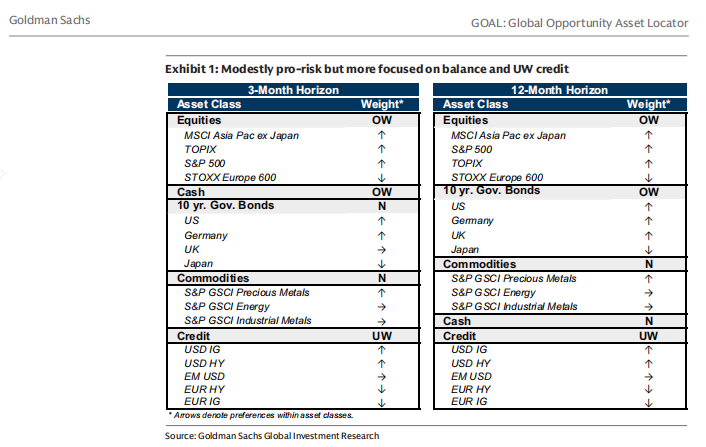
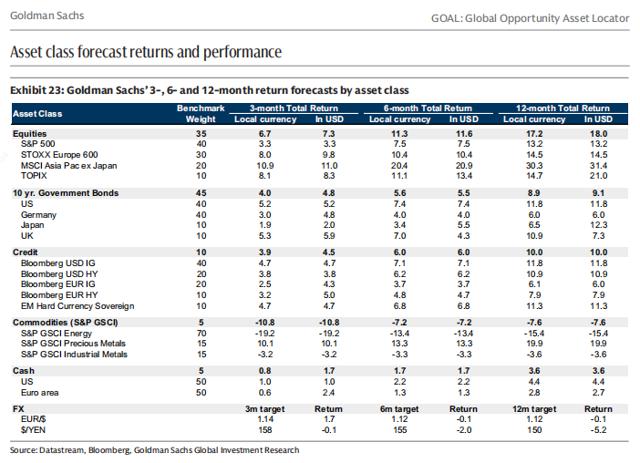
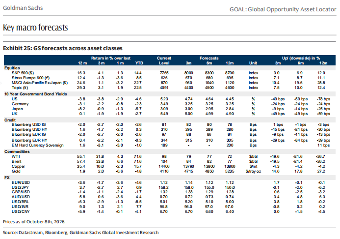
附件：《Giving credit to balance — bonds gradually moving from headwind to hedge》（高盛 GOAL 报告全文 PDF，约 1.1 MB）。本次只读到正文和 4 张截图，PDF 未展开。
背景与关键数据
- GOAL 是 Global Opportunity Asset Locator 的缩写，高盛组合策略团队（Christian Mueller-Glissmann 等）每季度发布的跨资产配置报告，日期 2026 年 10 月 12 日。很多机构的资产配置委员会会参考它。
- "股债相关性"：2022 年以来通胀主导市场，股票和债券经常同涨同跌，传统 60/40 组合（六成股票、四成债券）失去分散效果。高盛现在说"从逆风到对冲"，意思是随着通胀回落、增长风险上升，债券会回到"股票跌时债券涨"的老角色。
- 市场定价 vs 高盛预测：期货市场现在押注美联储还要加息 3 次以上、欧洲央行至少 2 次、英国央行接近 4 次；高盛经济学家只预计各加一次左右，2027 年可能转为降息。如果高盛对，长端国债收益率有下行空间，持有债券能赚资本利得。
- 术语：OW（overweight，超配）、UW（underweight，低配）、N（中性）；"信用债"指公司债，IG 为投资级、HY 为高收益（垃圾债）；"信用利差"是公司债收益率高出国债的部分，用来补偿违约风险，利差太窄说明没有补偿衰退风险。
- 当前宏观水平（报告表格，截至 10 月 8 日）：标普 500 在 7765、10 年期美债收益率 5.23%、Brent 油价 104 美元、黄金 4116 美元、铜 14,406 美元/吨。
- Goldilocks（金发女孩）情景：增长不冷不热、通胀回落。高盛预测 Brent 12 个月跌到 77 美元（跌 26%），WTI 跌到 72。
图片解读
- 图 1（报告首页）：五个要点。(1) 夏天以来风险资产横盘，利率和能源价格的逆风抵消了盈利的顺风，压力集中在利率敏感板块（小盘、地产、基建），收益率上升开始拖累信用（公司债利差走阔、欧洲主权债重新定价）；(2) 3 个月视角回到超配股票，盈利增长仍支持股票，估值已经"去估值化"，三季度财报季有改善的不对称性；(3) 基准情景：增长稳健、衰退风险低、通胀动能到 2027 年放缓；(4) 债券从逆风到对冲，但更高的收益率、财政担忧、AI 相关的资本竞争和通胀不确定性意味着久期择时要谨慎；(5) 股票内部用"杠铃"：一头 AI 受益者，一头利率敏感、高股息、低波动；近期用 VIX 看涨价差和外汇对冲防范利率波动、中东局势和美国中期选举。
- 图 2（Exhibit 1，配置表）：左边 3 个月、右边 12 个月。3 个月：股票 OW（亚太除日本↑、TOPIX↑、标普↑、欧洲 STOXX 600↓）、现金 OW、10 年政府债中性（美↑德↑英→日↓）、商品中性（贵金属↑能源→工业金属↓）、信用 UW。12 个月：股票 OW、10 年政府债 OW、商品中性、现金中性、信用 UW。两张表对比，关键变化就是"现金从超配变中性、政府债从中性变超配"，这就是帖子说的"短期股+现金、中期股+债"。
- 图 3（Exhibit 23，各资产回报预测）：12 个月本币总回报：股票 17.2%（亚太除日本 30.3% 最高、TOPIX 14.7%、标普 13.2%、欧洲 14.5%）；10 年政府债 8.9%（美债 11.8% 最高、英 10.9%、日 6.5%、德 6.0%）；信用债 10.0%；商品 -7.6%（能源 -15.4%、贵金属 +19.9%、工业金属 -3.6%）；现金 3.6%。
- 图 4（Exhibit 25，当前水平与目标）：标普 7765 → 12 个月 8700（+12%）；亚太除日本 870 → 1120（+28.8%）；10 年美债 5.23% → 4.45%（降 78 个基点）；美元 IG 利差 81bp → 78，美元 HY 310 → 280；WTI 98 → 72（-26.7%）、Brent 104 → 77（-26.2%）；铜 14,406 → 13,800（-4.2%）；黄金 4116 → 5235（+27.2%）；美元兑日元 158 → 150。左侧还显示过去 12 个月回报：WTI +55%、铜 +35%、标普 +16%、黄金仅 +1.9%、年内 -4.8%。
为什么重要 / 对市场和经济的含义
- 高盛在说"利率顶部已过"。即便 9 月 CPI 3.7%、市场定价还要加 3 次，高盛认为市场过度悲观，10 年期 5.23% 是历史级买点（一年回报两位数）。这是过去三年第一次有大行把债券重新放回"对冲"位置。
- Jason 点出的要害：整套逻辑依赖油价跌 26%。而中东局势（霍尔木兹、胡塞）让 Brent 维持在 100 以上。油价不跌 → 通胀不降 → 央行继续鹰 → 债券继续跌 → 股债继续同跌。这份报告的所有乐观都挂在一个外生假设上，Jason 显然对这个假设存疑。
- 黄金：年底目标从 4900 降到 4650，反映高实际利率对无息资产的压制，与帖 5（哈萨克央行卖金）互相印证。但 12 个月仍看 5235，逻辑是利率见顶后央行和 ETF 需求回归。
- 回避信用债：美元投资级利差只有 81 个基点，没有为衰退风险定价。股票已经被利率打过一轮（估值下修），信用债还没有。
- 对亚洲：MSCI 亚太除日本是高盛最看好的股票市场（12 个月 +28.8%），和帖 2 野村的"新兴市场资金转正"呼应。
延伸知识
- 股债相关性由"谁在驱动市场"决定：如果是增长冲击（衰退担忧），股跌债涨，负相关，60/40 有效；如果是通胀/利率冲击，股债同跌，正相关，60/40 失效。1970–90 年代高通胀期是正相关，2000–2020 低通胀期是负相关。判断相关性会不会"回归"，本质上是判断通胀会不会回落。
- 债券的"安全垫"：收益率 5.2% 时，即使利率再升 50 个基点，一年的票息也能覆盖大部分价格损失；如果利率降 78 个基点，则票息加资本利得双赢。高盛说的"回报不对称性改善"就是这个意思——收益率越高，买债券输的概率越小。
帖 2 · 12:59 · 野村：10 月前 9 天外资流入美股已超 9 月整月，新兴市场资金转正
美股跑赢并没有引发外资"获利了结"，反而加速流入：10 月 1–9 日流入美股基金 39.3 亿美元，已超过 9 月全月的 37.1 亿；新兴市场 ETF 也从上周净流出 2.3 亿转为净流入 3.3 亿。读全文收起
帖子原文
野村： 10 月至今，美股相关基金已经吸引了约 39.32 亿美元外资，整个美国资产相关基金净流入约 46.88 亿美元。而 9 月整个月，美股基金净流入约 37.13 亿美元。也就是说，10 月仅前 9 天，美股流入已经超过 9 月整月。意味着近期美股跑赢以后，并没有立刻出现明显的"涨多了就撤"，反而出现了：价格上涨 → 吸引更多海外资金 → 继续推高资金集中度。 新兴市场资金也重新转正了。10 月 5 日至 9 日，流入新兴市场 ETF 的资金约 3.31 亿美元，而前一周还是净流出约 2.30 亿美元。#金融#
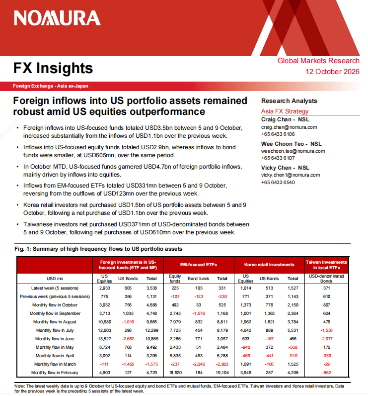
背景与关键数据
- 数据来源：野村亚洲外汇策略团队（Craig Chan 等）的高频基金流追踪，覆盖 ETF 和共同基金，是卖方常用的"仓位"指标。
- 本周（10 月 5–9 日）：外资流入美国基金 35.4 亿美元（前一周 11.3 亿），其中美股 29.3 亿、美债 6.05 亿。
- 10 月至今：美股 39.3 亿、美债 7.6 亿、合计 46.9 亿；9 月全月：美股 37.1 亿、美债 10.4 亿、合计 47.5 亿。
- 新兴市场 ETF：本周 +3.31 亿（股票 +2.25、债券 +1.05），前一周 -2.30 亿。
- 亚洲散户：韩国散户本周净买美国资产 15.3 亿美元（美股 10.1 亿），10 月至今 21.5 亿；台湾投资者净买 3.71 亿美元债券 ETF。
- "资金集中度"：指全球资金越来越集中在美国资产尤其是美股大盘科技，是"美国例外论"交易的表现。
图片解读
- 图 1（野村 FX Insights 首页 + Fig.1 表格）：表格按列分四块：外资投资美国基金（美股/美债/合计）、新兴市场 ETF（股票/债券/合计）、韩国散户（美股/美债/合计）、台湾投资者（美元债 ETF）；按行是最新一周、前一周、10 月至今、再往前 9 月到 2 月的月度流量。几个值得注意的对比：(1) 美股外资月度流量在 6 月（135 亿）、7 月（120 亿）见顶后，8 月 107 亿、9 月只有 37 亿，10 月前 9 天 39 亿——所以"超过 9 月整月"部分是因为 9 月本身很弱，按 10 月节奏全月可能回到 100 亿以上；(2) 新兴市场 ETF 2 月曾单月流入 191 亿，9 月只有 11.7 亿，10 月至今 5.3 亿，转正但量级不大；(3) 韩国散户每月稳定净买美股几十亿美元，从未转负；(4) 台湾投资者 6–7 月净卖美元债（-20.8 亿、-15.4 亿），8 月起转为净买。
为什么重要 / 对市场和经济的含义
- 解释"美股为什么不跌"：CPI 超预期、加息预期升温、10 年期 5.23% 是 24 年最高，但外资仍在加速买美股。价格上涨 → 吸引资金 → 推高集中度，这是典型的动量和反身性。
- 两种读法：既可以当作美股强势的证据，也可以当作过度集中的风险信号——资金越集中，一旦反转踩踏越猛。高盛报告里提到的"AI 相关资本竞争"担忧，指向的是同一件事。
- 新兴市场转正 + 高盛看多亚太除日本：说明全球风险偏好整体回升，美股和新兴市场不是零和。
- 韩国散户持续买美股是韩元疲软的一个结构性原因，也是近日"美元指数逼近 103"的背景之一。
延伸知识
- 反身性（Reflexivity）：索罗斯的概念，价格上涨本身会改变基本面（吸引资金、降低融资成本、提升盈利预期），形成自我强化循环，直到外生冲击打断。基金流数据正是观察这种循环的窗口。
- 基金流作为逆向指标：流入极端值通常出现在顶部附近，但"极端"要看相对历史——现在的 39 亿远低于夏天的 120–135 亿，谈不上极端，更像是"9 月的暂停后重新开始"。
帖 3 · 13:05 · 野村：中欧 TIC 联合声明是"缓期"不是"解决"，混动车限制借鉴 1981 年日美"自愿出口限制"
中欧 10 月 9 日达成 16 点共识，核心是约束中国混动车对欧出口增速（欧方说"四年内比无政策情景减半以上"，中方说"避免升级、保护出口商实际利益"），短期贸易战风险下降但机制细节未公布；野村用 1981 年日本对美汽车出口限制的先例提醒：限量不等于车企收入利润等比例下降，反而可能带来提价和高端化。读全文收起
帖子原文
野村： 解读 10 月 9 日中欧第二次贸易和投资磋商（TIC）联合声明，**短期升级风险下降了，但结构性矛盾基本没解决。**欧盟成功让中国混动车未来对欧出口增速受到约束，但不是简单"砍半"。2026 年 1—7 月，欧盟从中国进口混动车达到 378,426 辆，对行业的冲击压力已经从南欧扩散到德法。1981 年，日本曾对美国实施汽车"自愿出口限制"。结果并不是简单的出口额下降，而是：数量下降、单车价格提高、产品结构向更高端升级、日本车企拿到一部分"配额租金"。所以限制数量，不等于中国车企收入和利润同比例下降。#政策分析#
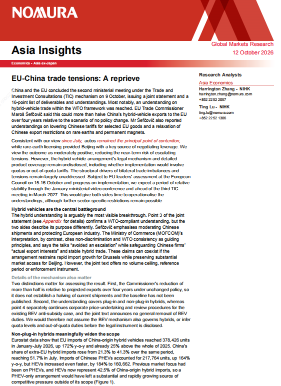
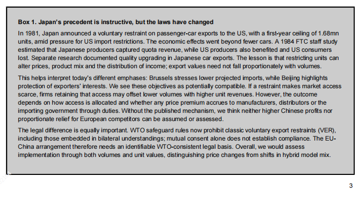
背景与关键数据
- TIC 是 Trade and Investment Consultations（中欧贸易和投资磋商）的缩写，部长级机制，10 月 9 日第二次会议发布联合声明和 16 点可交付成果清单，还包括中国降低部分欧盟商品关税、放松稀土和永磁体出口限制。
- 为什么是混动车：2024 年欧盟已对中国纯电车加征反补贴关税（最高 35.3%，叠加 10% 基础关税），中国车企转向出口插电混动（PHEV）和油电混动（HEV）绕开关税。Eurostat 数据：2026 年 1–7 月欧盟从中国进口混动车 378,426 辆，同比 +172%，占欧盟外部混动进口的 41.3%（2025 年 21.3%），7 月单月达 51.7%。其中 PHEV 217,764 辆（+164%），HEV 160,662 辆（+184%）。
- 两种叙事：欧盟贸易委员 Šefčovič 强调"减半以上"，中国商务部强调"非歧视、WTO 一致、避免升级"。野村认为两者可以共存——联合声明没有写数量上限、参考期或执行机制。
- 1981 年日美先例：日本承诺第一年对美出口不超过 168 万辆。结果是数量下降、单车价格上升、产品高端化（雷克萨斯、讴歌、英菲尼迪都诞生在那个年代）、日本车企拿到"配额租金"，美国消费者是输家（1984 年 FTC 研究）。
- 法律变了：WTO《保障措施协定》现在禁止经典的"自愿出口限制"，所以中欧安排需要一个 WTO 一致的法律形式（配额、配额外关税或价格承诺）。
- 时间表：10 月 15–16 日欧洲理事会评估 → 1 月中欧工业会议 → 2027 年 3 月第三次 TIC。
图片解读
- 图 1（野村 Asia Insights《EU-China trade tensions: A reprieve》）：标题的 reprieve 就是"缓期"。分析师 Harrington Zhang、陆挺。正文：混动车安排是最显眼的突破，但两边各说各话；机制细节（是否配额、配额外关税）未公布；"减半"是相对于无政策情景下的预测出口量，不是相对于当前水平；非插电混动也被纳入，覆盖面大增；Eurostat 数据显示中国混动车对欧出口 +172%。
- 图 2（Box 1《日本的先例有启发，但法律变了》）：1981 年 VER 的经济效应远不止"车卖少了"——数量下降、价格上升、产品质量升级、收入在美日之间重新分配，出口金额不一定按数量等比例下降。今天的不同：布鲁塞尔强调进口减少，北京强调保护出口商利益，两者"潜在兼容"——如果限制让市场准入变稀缺，拿到准入的企业可以用更高单价抵消更低数量。但结果取决于配额怎么分配、租金归谁（制造商、经销商还是进口国政府通过关税）。WTO 现在禁止 VER，所以需要可识别的合规法律基础。评估实施要同时看数量和单价。
为什么重要 / 对市场和经济的含义
- 对中国车企：限制出口数量 ≠ 利润等比例下降。可能的路径是提价（欧洲消费者买单）、产品高端化、到欧洲本地建厂——这正是帖 4 里比亚迪匈牙利工厂和"欧洲招 4 万人"的逻辑，也是 1980 年代丰田、本田赴美建厂的翻版。
- 对欧洲车企：短期喘息（Stellantis、大众股价小涨），但帖 4 也说明欧洲车企的问题是结构性竞争力，配额只能"部分抵消"。
- 对市场：贸易升级风险下降 = 风险溢价下降，但"结构性矛盾未解"意味着稀土、关税、补贴之争会反复出现。
- 与帖 9 的衔接：JPM 说欧盟初始配额 35 万辆/年，而中国对欧 PHEV/HEV 2026 年按年化可能 80 万辆——配额的冲击"远大于"出口退税下调 4 个百分点。
- Jason 的意图：连发三篇（野村、彭博、JPM）跟踪"中国汽车出口政策转向"，因为出口是当前中国经济"唯一还在转的引擎"，汽车是其中最亮的部分，这个变量变了，影响很大。
延伸知识
- 配额租金（quota rent）：进口被限量后，进口国国内价格高于世界价格，这个价差就是"租"。如果进口国用关税，租归进口国政府；如果用出口国"自愿限制"，租归出口国企业（它们决定卖给谁、卖多少钱）。所以 1980 年代美国的 VER 反而让日本车企赚了——这是贸易政策里著名的悖论，也是野村说"不等于利润等比例下降"的理论基础。
- 理解今天的最佳历史模板：1980 年代日美贸易战（汽车、半导体、广场协议）。延伸阅读方向：日本汽车业如何从出口导向转为海外生产（1985 年后日系在美产能大扩张），以及这对日本国内就业和产业链的影响——中国汽车业现在站在同样的门口。
帖 4 · 13:20 · 彭博四则：欧洲车企欢迎混动配额、碳酸锂期货暴跌 10%、比亚迪欧洲招聘 4 万人、马克龙-柏林汽车协议
中欧混动车配额安排的连锁反应一天之内全部出现：欧洲车企股价小涨并称之为"里程碑"，广期所碳酸锂期货单日跌 10%（电池需求预期下修），比亚迪宣布 2030 年前欧洲员工超 4 万人（本地化应对配额），马克龙称与德国"几天甚至几小时内"达成保护欧洲汽车工业的协议；同时中国自己宣布新能源车出口退税率 13% 降到 9%。读全文收起
帖子原文
bloomberg： 欧洲汽车制造商欢迎限制中国混合动力车进口的计划；该计划发布后，导致中国电池材料价格下跌 10%；比亚迪计划大规模招聘，将欧洲劳动力提升至 4 万人；马克龙预计即将与柏林达成保护欧盟汽车的协议；中国宣布把新能源汽车的增值税出口退税率由 13% 下调至 9%，车企要重新算账。 #政策分析#
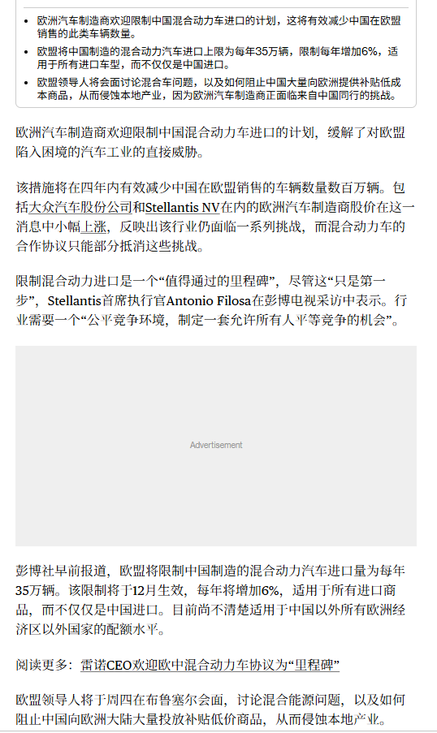
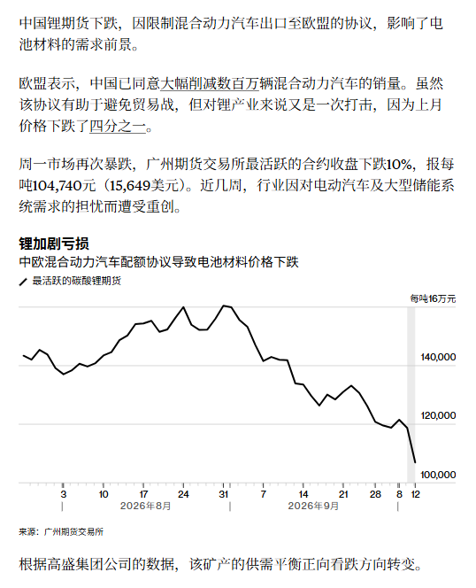
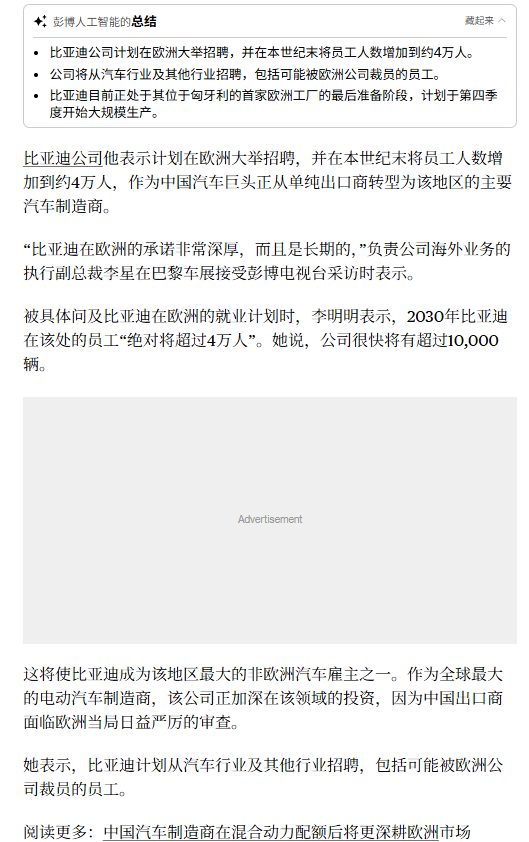
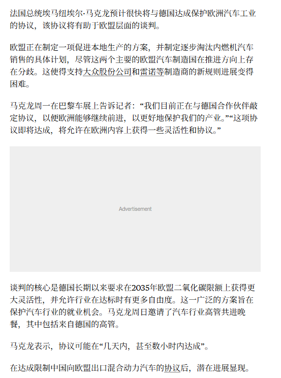
背景与关键数据
- 配额细节：每年 35 万辆，每年递增 6%，12 月生效，适用于所有进口来源（不只中国），但中国以外国家的配额水平尚不清楚。预计四年内减少数百万辆中国车在欧销量。欧盟领导人周四（10 月 16 日）在布鲁塞尔峰会讨论。
- 碳酸锂期货：广州期货交易所最活跃合约周一收跌 10%，报 104,740 元/吨（约 15,649 美元）。上个月已经跌了四分之一。高盛认为锂的供需平衡正转向看跌。
- 比亚迪：匈牙利塞格德工厂（首座欧洲工厂）处于最后准备阶段，四季度开始大规模生产；计划把欧洲员工增加到约 4 万人，从汽车及其他行业招聘，包括被欧洲公司裁员的人；执行副总裁李柯在巴黎车展接受采访时说"2030 年绝对会超过 4 万人"。这会让比亚迪成为欧洲最大的非欧洲汽车雇主之一。
- 马克龙：核心是德国长期要求 2035 年二氧化碳限额（燃油车禁售）获得更大灵活性，法国同意换取欧盟层面的"促进本地生产方案"；马克龙周日邀请车企高管（含德国高管）进晚餐。
- 出口退税：中国增值税率 13%，出口商品原则上"零税率"即全额退税。退税率降到 9%，意味着出口每 100 元货值企业少拿回 4 元，相当于出口成本上升 4 个百分点。帖 9 有 JPM 的详细测算。
图片解读
- 图 1（彭博：欧洲车企欢迎限制计划）：AI 摘要三点：有效减少中国在欧销量；上限 35 万辆/年、每年 +6%、适用所有进口车型；领导人将讨论如何阻止中国补贴低价商品侵蚀本地产业。正文：大众、Stellantis 股价小幅上涨；Stellantis CEO Antonio Filosa 称其为"值得通过的里程碑"但"只是第一步"，行业需要"公平竞争环境"；雷诺 CEO 也称之为里程碑。
- 图 2（《锂加剧亏损》图表）：最活跃碳酸锂期货，纵轴 10 万–16 万元/吨。2026 年 8 月初约 14 万 → 8 月 24–31 日高点约 15.7 万 → 9 月一路下滑到约 12.5 万 → 10 月 8 日约 12 万 → 10 月 12 日（配额消息后）直线跌到约 10.5 万。两个月跌去三分之一。配文：近几周行业因电动车和大型储能需求担忧遭受重创。
- 图 3（彭博：比亚迪欧洲招聘）：AI 摘要：本世纪末（指 2030 年前）欧洲员工约 4 万；从汽车及其他行业招聘；匈牙利工厂四季度量产。正文引用李柯："比亚迪在欧洲的承诺非常深厚，而且是长期的"；"很快将有超过 10,000 辆"（指匈牙利工厂的产量）。
- 图 4（彭博：马克龙-柏林协议）：正文：协议有助于欧盟层面的谈判；欧盟在制定促进本地生产方案和逐步淘汰内燃机的具体计划，但两大汽车国在推进方向上有分歧，让支持大众、雷诺等的新规进展困难；谈判核心是德国要 2035 年 CO2 限额灵活性；马克龙说"几天内、甚至数小时内"；在限制中国混动出口的协议达成后，潜在进展显现。
为什么重要 / 对市场和经济的含义
- 锂价暴跌是这条新闻链里最"可交易"的信号。锂是"中国新能源车出口预期"的高弹性代理：限制混动出口 → 电池需求预期下修 → 锂 -10%。叠加高盛看跌供需，8 月那波锂价反弹被证伪。对 A 股/港股锂矿和电池板块是直接利空，10.5 万元/吨已接近很多非盐湖产能（锂云母、非洲锂辉石）的成本线。
- 比亚迪 4 万人 = 日本 1980 年代的本地化剧本（帖 3）：绕开配额最好的方式是在欧洲造车。对欧盟是"想要的结果"（就业+投资），对中国国内是"产业外移"。
- 法德分歧收敛意味着欧洲对中国的贸易壁垒会更系统化——法国要保护、德国要灵活，现在用"放松 2035 禁燃令换本地生产方案"打包解决。
- 两头收紧：欧盟设配额，中国自己减退税。中国汽车出口的高增长期可能正在见顶，这是出口"唯一引擎"的一个重要减分项。
延伸知识
- 出口退税是中国调节出口的"阀门"：2008 年金融危机时上调退税率刺激出口；2024 年取消铝材、铜材出口退税；2025 年取消光伏退税；这次新能源车从 13% 降到 9%。每次下调都对应"出口太猛、引发摩擦或加剧内卷"的时点。读到退税率变化，可以反推政策层对该行业的态度转变。
- 期货"最活跃合约"：广期所碳酸锂期货（代码 LC）是全球锂定价基准之一。价格跌破高成本产能的现金成本线后，通常会看到减产公告，之后价格才能企稳——所以接下来要看江西锂云母和非洲矿的减产消息。
帖 5 · 13:22 · 彭博：哈萨克斯坦央行从黄金买家转为卖家，金价自美伊战争以来跌约五分之一
世界黄金协会（WGC）统计的 2026 年前八月第四大官方买家哈萨克斯坦央行，因为美债收益率升到 24 年最高、美元资产重新有吸引力，决定年底前把黄金在外储中的份额从约 78% 降到 75%，一半靠卖期权、一半卖实物；金价从 1 月高点 5600 美元跌到约 4172，跌幅约五分之一。读全文收起
帖子原文
bloomberg： 2026 年前八个月 WGC 数据中的第四大买家——哈萨克斯坦中央银行正从全球最大的黄金买家之一转变为卖方，希望在年底前将黄金在外汇储备中的份额降低约 3 个百分点。#金融#
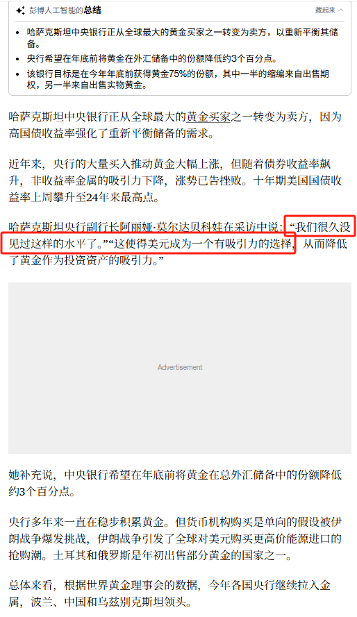
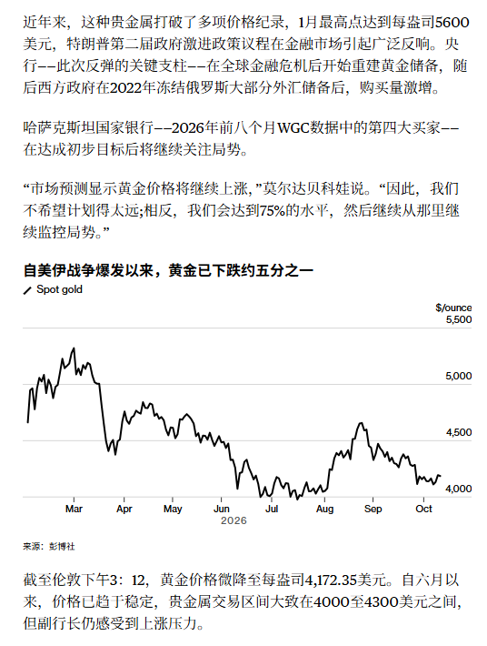
背景与关键数据
- 哈萨克斯坦央行的特殊性：哈萨克斯坦是产金国，央行有国内产金优先购买权，所以黄金在其外储中占比高达 75–78%，远高于一般央行。这次"卖"更多是组合再平衡（黄金占比太高），而不是看空黄金——副行长说"市场预测显示黄金价格将继续上涨"。
- 触发因素：十年期美债收益率上周升至 24 年最高（5.23%）。副行长 Aliya Moldabekova："我们很久没见过这样的水平了，这使美元成为一个有吸引力的选择，从而降低了黄金作为投资资产的吸引力。"
- 金价轨迹：1 月高点 5600（特朗普第二届政府刺激政策预期、央行购金），美伊战争爆发后急跌——战争推高能源价格，各国需要更多美元买能源，引发"抢美元"，黄金反而下跌；6 月以来在 4000–4300 区间，10 月 12 日伦敦下午 4172.35。
- 其他央行：土耳其、俄罗斯年初已出售部分黄金；买方仍以波兰、中国、乌兹别克斯坦领头。
- 操作方式：一半通过出售期权（卖出看涨期权，被行权就交割黄金，同时赚权利金），一半卖实物。
图片解读
- 图 1（彭博 AI 摘要 + 正文上半）：三个要点：从买家变卖家以重新平衡储备；年底前降 3 个百分点；目标 75%，一半通过期权、一半实物。正文：债券收益率飙升削弱了非收益资产的吸引力；副行长采访（红框标出"我们很久没见过这样的水平了""使美元成为有吸引力的选择"）；央行多年稳步积累黄金，但"货币机构购买是单向的"这一假设被伊朗战争打破；土耳其、俄罗斯年初已卖；WGC 数据显示今年各国央行总体继续买入。
- 图 2（《自美伊战争爆发以来，黄金已下跌约五分之一》图表）：现货金，美元/盎司，纵轴 4000–5500。2026 年 2 月底约 5000–5300，3 月初急跌至约 4600，4–5 月在 4500 附近震荡下行，6 月底低点约 3900–4000，7–8 月 4000–4300，9 月初反弹到约 4600，10 月回落到约 4100–4200。配文：6 月以来价格趋于稳定，交易区间 4000–4300，但副行长仍感受到上涨压力。上方正文：1 月最高点 5600；央行是"此次反弹的关键支柱"，金融危机后开始重建黄金储备，2022 年西方冻结俄罗斯外储后购买量激增。
为什么重要 / 对市场和经济的含义
- 央行购金是过去三年黄金牛市的"关键支柱"，哈萨克斯坦这种前八月第四大买家转卖是"支柱松动"的信号。即便理由是本国组合再平衡，传递的信息是：美债 5%+、真实利率高企时，黄金的机会成本太大，连央行也动摇。
- 美伊战争的反直觉效应：战争通常利好避险资产，但这次油价飙升 → 各国抢美元买能源 → 美元强、黄金弱。这是"美元流动性"逻辑压倒"避险"逻辑的案例，理解它才能理解为什么地缘冲突下黄金反而跌。
- 对交易者：4000 是关键支撑（6 月低点）；央行卖盘、ETF 流出、高利率是三重压力。但高盛 12 个月仍看 5235（帖 1），分歧在"利率什么时候见顶"——又回到油价。
- Jason 的排列：帖 1 高盛下调金价目标、帖 5 央行卖金连着发，表达的是对黄金的谨慎。
延伸知识
- 黄金的机会成本框架：黄金无利息，持有黄金的"成本"是放弃的真实利率（名义利率减通胀预期）。真实利率越高，黄金越弱——这是黄金定价最核心的框架，历史上 TIPS 收益率与金价高度负相关。2022–2025 年黄金打破了这个框架（高利率下仍涨），靠的是央行购金；现在央行一松动，框架"回归"。
- 央行卖黄金看涨期权：相当于 covered call——收权利金，金价涨过行权价就以行权价卖出黄金。央行用这种方式渐进减持，既不砸盘又多赚一笔。这和个人投资者对持仓股票卖 call 收租是同一个逻辑。
帖 6 · 13:27 · 彭博观点：普京为什么把"输掉乌克兰"说成"俄罗斯可能不复存在"
彭博评论拆解普京"俄罗斯存在权受威胁"的叙事：一半是政治动员（为国防预算再增 27%、持续征兵、吓阻欧洲找理由），一半是精英真实的历史焦虑（目睹苏联解体、把 1991 年的损失当成"真正的赌注"）；普京口中的"俄罗斯"比地图上的大——是势力范围、文明空间和大国席位，必须靠武力获得和守护。读全文收起
帖子原文
bloomberg： 为什么普京和俄罗斯统治精英会把"乌克兰战争失败"描述成"俄罗斯这个国家可能不复存在"？这里面既有政治宣传和动员需要，也有俄罗斯统治精英真实存在的历史认知与安全焦虑。而且在普京的语境里，"俄罗斯存在"并不只是指地图上的俄罗斯联邦继续存在，而是指俄罗斯能否继续作为一个拥有势力范围、文明空间和大国地位的国家存在。#其他国家经济#
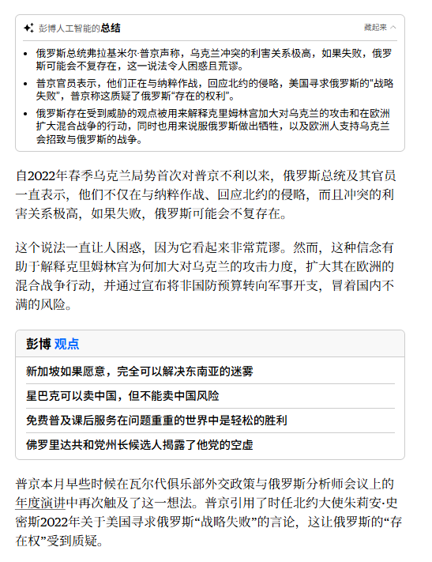
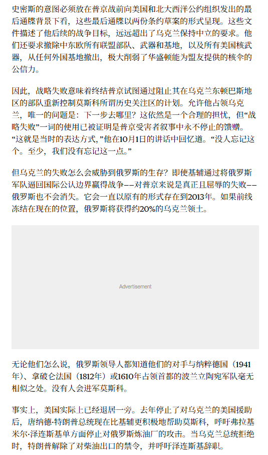
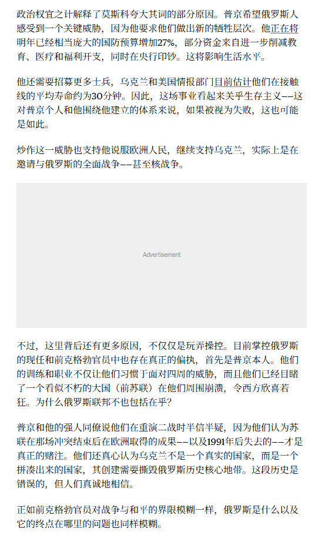
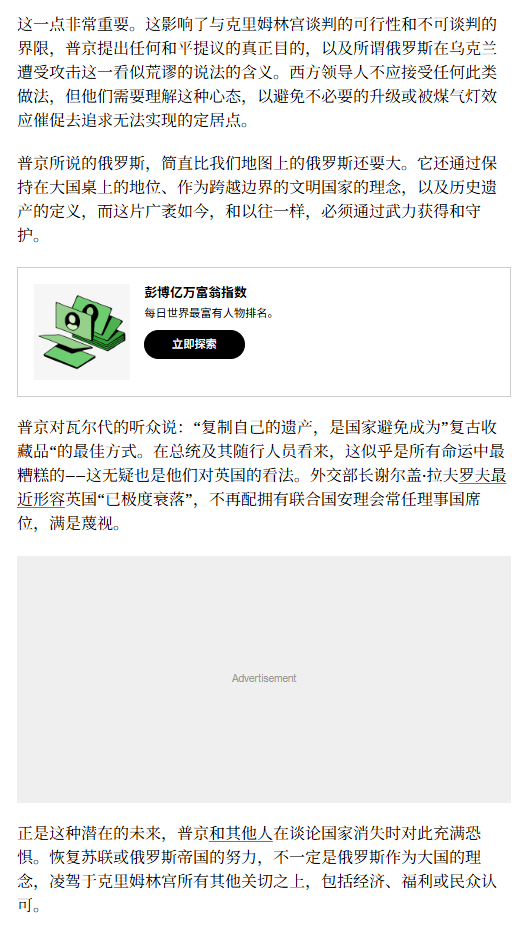
背景与关键数据
- 缘起：普京 10 月初在瓦尔代俱乐部年度演讲再次触及这一说法，引用 2022 年时任美国驻北约大使朱莉安·史密斯"美国寻求俄罗斯战略失败"的言论。
- 2021 年 12 月的"最后通牒"：俄罗斯向美国和北约提出两份条约草案，要求乌克兰中立、撤出中东欧所有联盟部队和基地、把美国核武器从所有外国基地撤出——远超"乌克兰保持中立"的诉求。所谓"战略失败"，是指普京重新控制乌克兰的计划被终结。
- 事实核查：即便乌克兰把俄军逼回国际公认边界，俄罗斯也会以 2013 年的形态继续存在；如果前线冻结在现状，俄罗斯获得约 20% 乌克兰领土。没有人会进军莫斯科。
- 战时财政：明年国防预算在已经庞大的基础上再增 27%，资金来自削减教育、医疗、福利和央行印钞；乌克兰和美国情报估计前线士兵接触线上的平均存活时间约 30 分钟，需要持续征兵。
- 美国立场的变化：文章称特朗普停止对乌援助后，呼吁泽连斯基单方面停止打击俄罗斯炼油厂，被拒后解除对俄石油出口的禁令，并呼吁泽连斯基辞职。
- 外交语言：拉夫罗夫称英国"已极度衰落"，不再配拥有安理会常任理事国席位。
图片解读
- 图 1（AI 摘要 + 开头）：三点：普京称失败则俄罗斯可能不复存在，令人困惑且荒谬；官员称在与纳粹作战、回应北约侵略；"存在受威胁"被用来解释克里姆林宫加大对乌攻击和在欧洲扩大混合战争。正文：自 2022 年春季局势首次对普京不利以来，这种信念解释了为何把非国防预算转向军费、冒着国内不满的风险。
- 图 2：2021 年最后通牒的背景；"下一步去哪里"是合理担忧；"战略失败"一词成了普京受害者叙事的馈赠；但乌克兰的失败不会威胁俄罗斯生存；俄罗斯的对手与纳粹德国、拿破仑、1610 年波兰立陶宛毫无相似；美国实际上已退居一旁。
- 图 3：政治权宜——国防预算 +27%、削福利、印钞、征兵；对普京个人和他建立的体系来说，这场事业"是生存主义"；炒作威胁也是为了说服欧洲人"支持乌克兰等于邀请与俄罗斯全面战争甚至核战争"。更深的原因：克格勃出身精英的偏执和历史认知——他们目睹了"看似不朽的大国"在周围崩溃，认为 1991 年后失去的才是真正的赌注，真诚相信乌克兰不是真实国家。
- 图 4：这影响了与克里姆林宫谈判的可行性和不可谈判的界限；西方不应接受但需要理解这种心态，避免升级或被"煤气灯效应"推向无法实现的定局；普京的俄罗斯"比地图上的大"——大国桌上的席位、跨越边界的文明国家、历史遗产，必须用武力获得和守护；"复制自己的遗产是避免成为复古收藏品的最佳方式"；恢复苏联或俄罗斯帝国的努力凌驾于经济、福利和民众认同之上。
为什么重要 / 对市场和经济的含义
- 这是"俄乌战争为什么不会很快结束"的框架。如果莫斯科把战争定义为生存之战，"冻结前线"的和谈就很难达成，意味着能源制裁、欧洲防务开支、黑海粮食和化肥风险会长期存在。帖 7 的俄罗斯能源买家数据是经济面的延伸。
- 战时经济的代价：国防预算 +27% 靠印钞和削福利，是典型的战时财政——通胀高、俄央行利率维持高位、民生受损，但短期不会崩溃，因为高油价（美伊战争下 Brent 100+）给俄罗斯财政输血。
- 对欧洲：俄罗斯不退，欧洲就得持续加军费 → 财政赤字扩大 → 欧洲主权债利差重新定价，这正是帖 1 高盛提到的"欧元区主权风险重新定价"。
- 对谈判的判断：理解"非理性叙事"背后的理性（动员）和真实焦虑（历史），才能判断哪些是红线（乌克兰不入北约）、哪些可以谈（领土冻结）。Jason 打 #其他国家经济# 标签，关注点可能是俄罗斯战时财政的可持续性和对能源市场的含义。
延伸知识
- 战时财政的三条路：加税、借债、印钞。俄罗斯被制裁后借不到外债，只能靠印钞（央行融资）、削减非军费、高油价收入。油价是俄罗斯财政的生命线——这也解释了为什么美伊战争对俄罗斯是"意外之财"，以及为什么乌克兰要打俄罗斯炼油厂。
- 煤气灯效应（gaslighting）：心理学术语，指通过持续否认事实让对方怀疑自己的认知。文章用它提醒西方：不要被"俄罗斯受害者叙事"带偏，但也不要忽视对方的真实恐惧。延伸阅读：Fiona Hill《Mr. Putin: Operative in the Kremlin》，关于苏联解体如何塑造俄罗斯精英心理。
帖 7 · 20:34 · CREA：开战以来俄罗斯化石能源买家排行——中国累计 3,558 亿欧元第一，欧盟第二，印度第三
CREA 统计 2022 年 2 月 24 日至 2026 年 10 月 9 日，中国累计购买俄罗斯化石能源 3,558 亿欧元居首（以石油为主），欧盟 2,380 亿第二（天然气占一半以上），印度 1,900 亿第三（几乎全是石油，部分炼成成品油转卖欧洲），土耳其 1,378 亿第四，之后断崖式下降到德国 296 亿。读全文收起
帖子原文
CREA： 俄罗斯能源都卖给了谁？统计区间是俄乌战争开始至 2026 年 10 月 9 日，中国已经是累计金额最大的俄罗斯化石能源买家。欧盟排第二，石油+天然气，而且天然气占比相当高；印度除了自用也甘当欧洲的二传手。#金融#
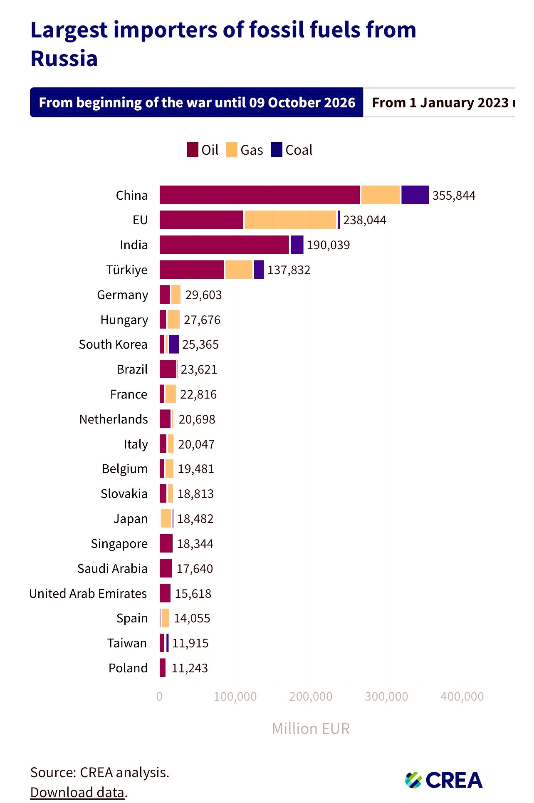
背景与关键数据
- CREA 是 Centre for Research on Energy and Clean Air（能源与清洁空气研究中心）的缩写，芬兰智库，维护"Russia Fossil Tracker"，用船运和海关数据追踪俄罗斯化石能源出口。
- 前四名（百万欧元）：中国 355,844；欧盟 238,044；印度 190,039；土耳其 137,832。第五名起：德国 29,603、匈牙利 27,676、韩国 25,365、巴西 23,621、法国 22,816、荷兰 20,698、意大利 20,047、比利时 19,481、斯洛伐克 18,813、日本 18,482、新加坡 18,344、沙特 17,640、阿联酋 15,618、西班牙 14,055、台湾 11,915、波兰 11,243。注意德国、匈牙利、法国等已包含在欧盟总数里。
- 结构差异：中国约四分之三是石油，天然气和煤炭各占一小块；欧盟天然气（管道气 + LNG）超过一半，煤几乎为零；印度几乎全是石油加少量煤；土耳其三种都有；韩国煤炭占比显著；日本主要是萨哈林 LNG。
- 印度的"二传手"角色：信实、Nayara 等印度炼厂买打折俄油，炼成柴油和航煤出口欧洲。欧盟 2023 年 2 月禁俄成品油，但长期不禁"印度产"成品油，直到 2025 年第 18 轮制裁才开始限制用俄油炼的成品油。
- 沙特和阿联酋也买俄油：主要是燃料油用于发电，把自己的原油腾出来出口——全球能源体系"物理上不可分割"的例子。
图片解读
- 图 1（CREA 横向堆叠条形图《Largest importers of fossil fuels from Russia》）：时间窗口标签"从开战至 2026 年 10 月 9 日"（旁边另一个标签页是"从 2023 年 1 月 1 日起"，即制裁全面生效后的窗口，未展示）。颜色：深红为石油、橙为天然气、紫为煤炭。横轴单位百万欧元，0 到 40 万。中国的条最长，深红占约四分之三，橙和紫各一小段；欧盟的条里橙色超过一半，深红约 1,100 亿；印度几乎全深红，末端一小段紫；土耳其深红约 860 亿、橙约 400 亿、紫约 150 亿。前四名之后的条都非常短，德国、匈牙利分别以天然气为主，韩国以煤炭（紫）为主，日本几乎全橙（LNG）。
为什么重要 / 对市场和经济的含义
- 揭示制裁的"漏洞结构"：欧盟一边制裁俄罗斯，一边是第二大买家——主要是开战初期的管道气和之后匈牙利、斯洛伐克、法国、比利时、西班牙的 LNG 进口。欧盟计划 2027 年全面停止俄 LNG，但图上的橙色说明这条路走了四年还没走完。
- 中国是最大买家，但要看相对量：中国年能源进口约 4,000 亿美元，俄罗斯四年半 3,558 亿欧元平均每年约 800 亿，占比两成左右；关键是中国以折扣价买到能源，这是中国制造业成本优势的一部分，在 PPI 冲到 5% 的输入型通胀背景下更重要。
- 对油价和地缘：美伊战争让霍尔木兹风险上升，俄油对中印的重要性进一步提高；如果特朗普真的放松对俄油的限制（帖 6 提到），俄油折扣会收窄，中印的成本优势会减少。
- Jason 的视角：打 #金融# 标签，结合前一天"赞比亚铜用人民币结算"，他可能在跟踪"谁在为俄罗斯战争买单"和能源贸易的人民币化。
延伸知识
- 价格上限（Price cap）机制：G7 在 2022 年 12 月对俄油设 60 美元上限（2025 年降至 47.6），允许用西方保险和航运的前提是售价低于上限。俄罗斯用"影子船队"绕开。所以制裁的效果是"折扣"而非"断供"——俄罗斯卖得出去，但卖得便宜，买家（中印）赚了价差。
- 能源贸易的"洗产地"：印度炼俄油出口成品油、沙特买俄燃料油发电腾出原油出口、新加坡作为炼油中心转口，都说明制裁改变的是流向而不是总量。看能源制裁的效果，要看俄罗斯的出口金额（量 × 价），而不只是看"谁不买了"。
帖 8 · 20:41 · 国信达：9 月全国商铺出售挂牌价同比 -16.88%，出租挂牌价同比 -7.26%
商铺（零售型商业地产）仍在深跌：出售挂牌价同比 -16.88%、出租挂牌价同比 -7.26%；长期图显示价指数从 2019 年的 100 跌到约 45、挂牌量指数从峰值 90 多跌到约 20，是量价齐缩的"流动性枯竭"市场。读全文收起
帖子原文
国信达： 9 月份，全国商铺出售挂牌价指数环比上涨 0.49%，同比下降 16.88%；出租挂牌价指数环比下降 0.46%，同比下降 7.26% #经济数据#
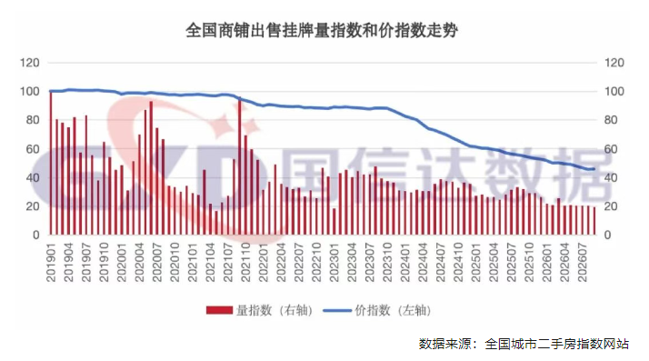
背景与关键数据
- 数据来源：国信达基于"全国城市二手房指数网站"的挂牌数据编制。挂牌价不等于成交价（成交价通常更低），但趋势一致。
- 商铺为什么比住宅跌得惨：电商冲击、消费疲弱、供给过剩（过去十年大量住宅底商配建）三重打击。住宅二手房从 2021 年高点跌约 20–30%，商铺挂牌价已跌超一半。
- 租金跌幅小于售价：售价 -16.88%、租金 -7.26%，意味着租金回报率在"被动"上升——不是租金涨了，是价格塌得更快。
- 环比 +0.49%：9 月售价环比小涨，可能是季节性或个别城市的挂牌结构变化，不改趋势。
图片解读
- 图 1（《全国商铺出售挂牌量指数和价指数走势》，2019 年 1 月至 2026 年 9 月）：蓝线是价指数（左轴，2019 年初 = 100）：2019–2021 年基本持平在 97–100，2021 年下半年开始缓慢下行，2023 年中起加速——约 90（2023 年中）→ 70（2024 年中）→ 55（2025 年中）→ 约 45（2026 年 9 月），七年跌了 55%。红柱是量指数（右轴）：2019–2021 年在 20–95 之间剧烈波动，2020 年 4 月和 2021 年 10 月两次高峰接近 90；2022 年后系统性下移到 20–50；2025 年以来大多在 15–30。价跌、量缩，典型的"想卖的人多但买家少，挂不出去就不挂了"。
为什么重要 / 对市场和经济的含义
- 商铺是中国家庭和小企业主重要的财富载体（"一铺养三代"），也是很多中小银行的抵押品。价格跌一半以上意味着抵押品缩水、坏账压力，以及反向财富效应。这是帖 10 彭文生"家庭部门还本付息负担高位"和前一日"居民净新增债务转负"的微观注脚。
- 租金还在跌，说明没到底：租金回报率上升是因为分母（价格）塌，不是分子（租金）涨。只有租金企稳才能谈"底部"，而 -7.26% 说明实体零售需求仍在收缩。
- 被遗忘的角落：商业地产没有住宅那样的"收储""白名单"政策支持。Jason 用它提醒：房地产问题不只是住宅。
延伸知识
- 挂牌价指数的两个偏差：(1) 卖家锚定效应，降价慢于实际成交；(2) 幸存者偏差，卖不出去的撤牌。所以挂牌价指数通常低估跌幅、滞后于拐点——实际成交价的跌幅可能比 -16.88% 更大。
- 资本化率（Cap rate）= 净租金 / 价格：商铺价格跌、租金跌得慢，cap rate 上升。当 cap rate 显著高于无风险利率（中国 10 年国债约 1.7–2%）加风险溢价时，买家才会回来。现在的问题是：买家不确定租金会不会继续跌，所以"便宜"也不敢买。
帖 9 · 20:46 · JPM：中国新能源车出口退税 13%→9%，2027 年车企利润或被打掉 10–20%，欧盟配额冲击更大
JPM 测算财政部"2027 年 4 月起新能源乘用车出口退税 13%→9%"的影响：不提价的话，比亚迪和零跑 2027 年盈利下修约 18%，吉利约 10%，长城、奇瑞 6–8%；政策逻辑从鼓励出口转向控制补贴强度和缓和摩擦；预计 2027 年 4 月前出现抢出口；欧盟混动配额（35 万辆 vs 年化 80 万辆出口）的冲击远大于退税；对 2027 年行业谨慎、公司分化明显。读全文收起
帖子原文
JPM： 从 2027 年 4 月起，中国新能源乘用车出口增值税退税率将从 13% 降到 9%。对出口敞口高的车企，若无法提价转嫁成本，2027 年利润可能被打掉 10%—20%。说明政策逻辑可能已经开始从鼓励出口往控制出口补贴强度+缓和外部贸易摩擦转。估计车企会在 2027 年 4 月政策实施前抢出口，把更多车提前发到海外港口或渠道，以享受 13% 的旧退税率。 另外，欧盟可能从 2027 年起对中国 PHEV/HEV 实施年度出口量配额。初始配额是 35 万辆/年，而按 2026 年年内速度，中国对欧 PHEV/HEV 出口可能超过 80 万辆，这个冲击显然远大于 4 个百分点出口退税。接下来最关键的是看：**10 月 15—16 日欧盟峰会最终怎么定。**我们对 2027 年中国汽车行业继续保持谨慎。行业整体利润压力大，但公司间分化会非常明显。#政策分析#
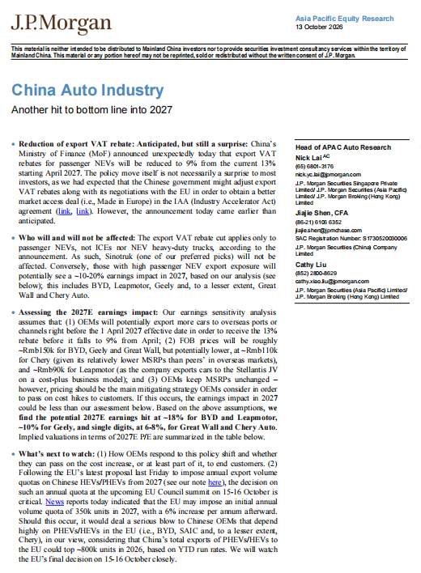
附件：《China Auto Industry: Another hit to bottom line into 2027》（JPM 报告 PDF，约 350 KB）。本次只读到正文和首页截图。
背景与关键数据
- 适用范围：只针对新能源乘用车，燃油车和重卡不受影响——重卡出口商中国重汽是 JPM 的偏好标的，正因为它不在范围内。
- 测算假设：(1) 车企在 2027 年 4 月前抢出口；(2) 离岸价（FOB）比亚迪约 15 万元/辆、吉利和长城约 11 万、奇瑞约 10 万、零跑约 9 万；(3) 车企不提价。4% 退税损失按 FOB 计算，比亚迪单车损失约 6,000 元。
- 盈利影响：比亚迪、零跑 -18%；吉利 -10%；长城、奇瑞 6–8%。
- 欧盟配额：初始 35 万辆/年、每年 +6%；中国对欧 PHEV/HEV 2026 年按年化可能 80 万辆，相当于砍掉一半以上。依赖欧盟的车企：比亚迪、上汽、吉利。
- "预期之中但仍是意外"：市场预料中国会在与欧盟谈判中调整退税（作为汽车产业加速器协议的一部分），但来得比预期早。
- 背景数据：中国 2025 年汽车出口约 640 万辆全球第一，新能源占约三分之一，欧洲是新能源车出口最大的高价市场。
图片解读
- 图 1（JPM 亚太股票研究《China Auto Industry — Another hit to bottom line into 2027》，2026 年 10 月 13 日，Nick Lai 等）：四段。(1) 退税下调"预期之中但仍是意外"：财政部宣布 2027 年 4 月起 13%→9%，市场预料到会在与欧盟谈判中调整（IAA 协议），但时间早于预期；(2) 谁受影响：只有新能源乘用车，不含燃油车和重卡，中国重汽不受影响；高出口敞口的比亚迪、零跑、吉利、长城、奇瑞盈利影响 10–20%；(3) 2027 年盈利敏感性：假设抢出口、FOB 价格、不提价，比亚迪和零跑 -18%、吉利 -10%、长城和奇瑞 6–8%，表格给出对应的 2027 年市盈率（表格不在截图内）；(4) 关注点：车企是否提价转嫁；欧盟 10 月 15–16 日峰会是否确定 35 万辆配额——若成真，对高度依赖欧盟的比亚迪、上汽、吉利是"一系列打击"。
为什么重要 / 对市场和经济的含义
- 这是三篇汽车主题帖（3、4、9）的结论：中国新能源车出口的黄金期正在被两头挤压——出口国（中国）减补贴、进口国（欧盟）设配额。2027 年行业利润承压，但分化明显：有海外工厂的（比亚迪匈牙利、奇瑞西班牙）、高端化的、不依赖欧盟的（中东、拉美、东南亚）相对好；高出口弹性的零跑和依赖欧洲的比亚迪受影响最大。
- 政策信号：退税下调可能也是国内"反内卷"的一环——减少对出口的隐性补贴，倒逼价格战降温。这和前几天 PPI 5%、"内卷变负卷"的主题连起来。
- 数据扭曲提醒：2027 年一季度汽车出口数据会被"抢出口"前置扭曲，之后二季度会有坑，看数据时要注意。
- 卖方措辞："谨慎 + 分化"是对一个曾经高景气行业降温的标准措辞。
延伸知识
- FOB（Free On Board，离岸价）：出口商把货装上船的价格，不含运费和保险。退税按 FOB × 退税率计算，所以单价越高的车（比亚迪 15 万）绝对损失越大。
- 政策工具箱里的出口退税：中国用退税率微调来管理贸易摩擦有一贯的历史——2007 年取消部分高耗能产品退税、2024 年取消铝铜退税、2025 年取消光伏退税、2027 年新能源车降 4 个百分点。每一次都是在"出口太猛、引发摩擦"的时点，可以作为判断政策层对某行业态度的先行指标。
帖 10 · 21:36 · 彭文生长文：中国是下一个日本吗？人口红利叠加城镇化、"被动城镇化"与供需两侧城镇化失衡
中金首席经济学家彭文生用"生产者/消费者比例"框架对比中日：中国人口红利 2015 年见顶（比日本晚 20 年但峰值更高）、金融周期 2017 年见顶后进入下半场且深度已超日本；中国的特殊之处是过去 30 年人口红利和城镇化叠加（"未富先老、未完成城镇化就已经老龄化"），未来城镇化率会因农村老人离世而"被动"上升但对经济拉动很小；常住人口城镇化 68% 与户籍人口城镇化 48% 的 20 个百分点差距是"供给侧城镇化快于需求侧"——进城人口贡献了生产，但作为消费者享受不到对等的公共服务，这是消费疲弱的制度根源；药方是紧信用、松货币、宽财政，化解地方债、延长按揭、降存量利率、个人破产机制，以及完善社保和公共服务。读全文收起
帖子原文
彭文生这篇不错 #经济数据#
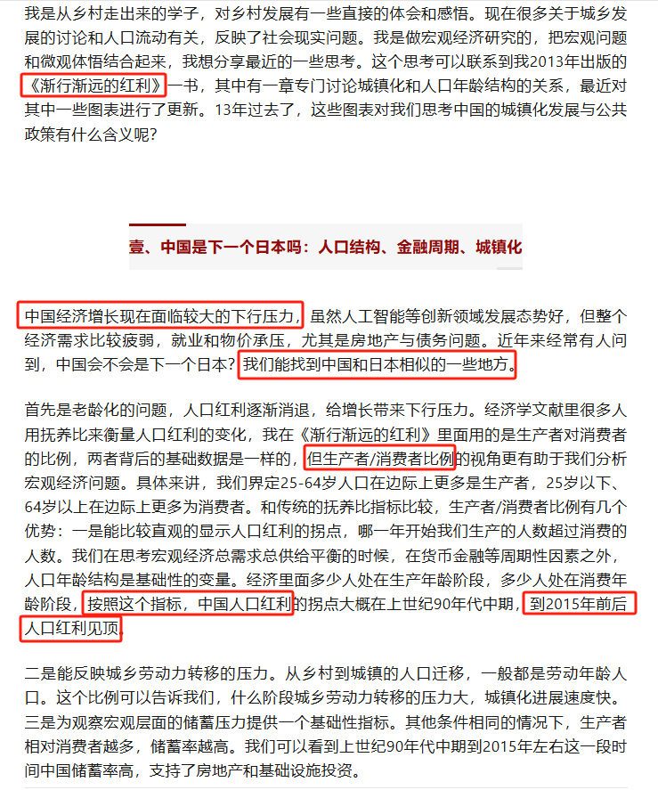
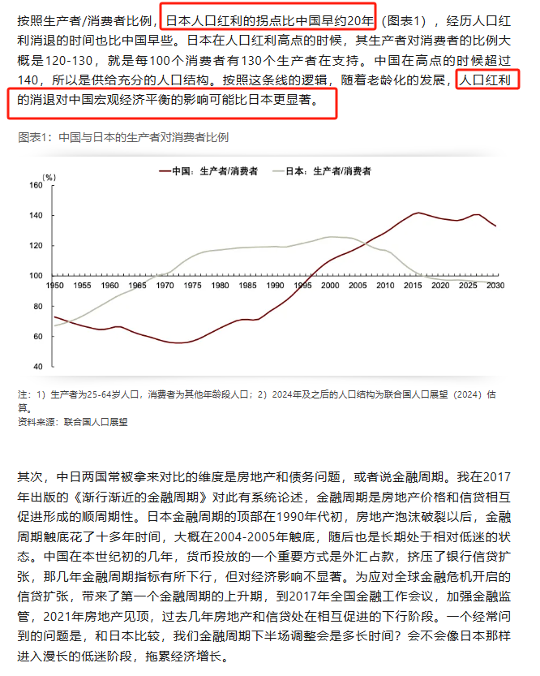
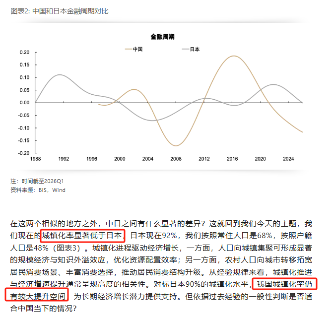
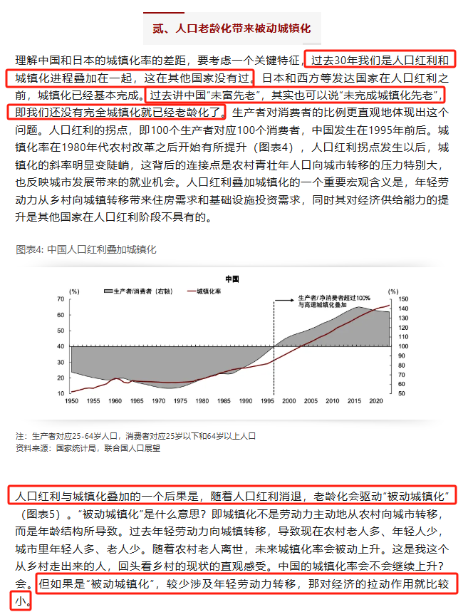
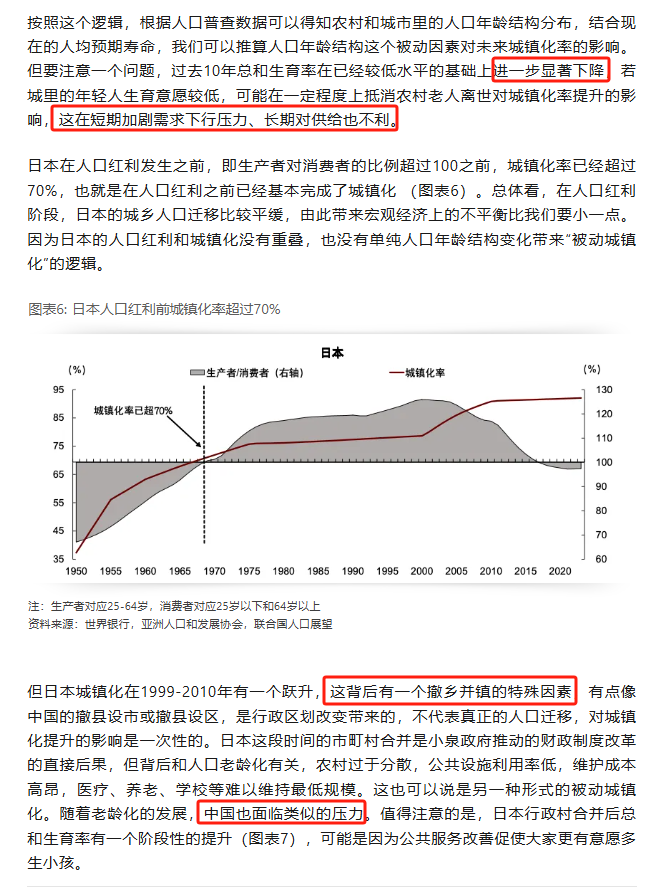
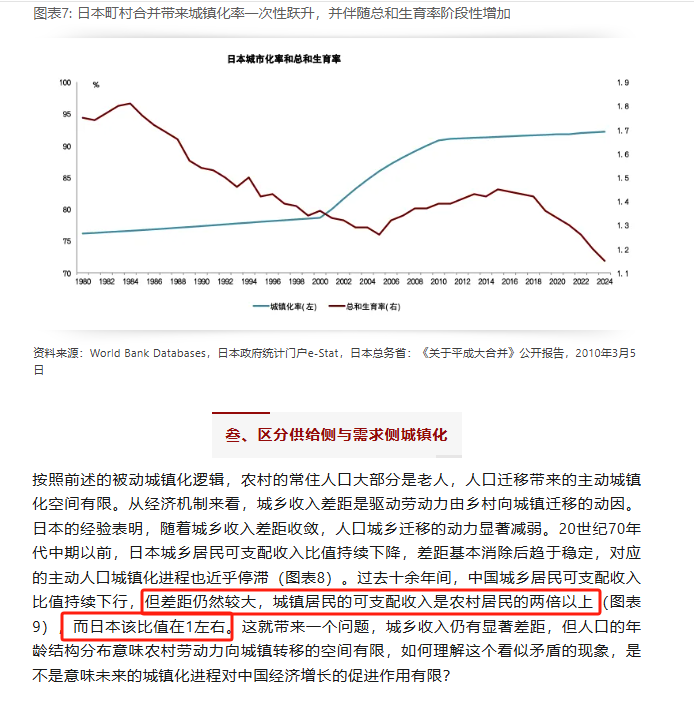
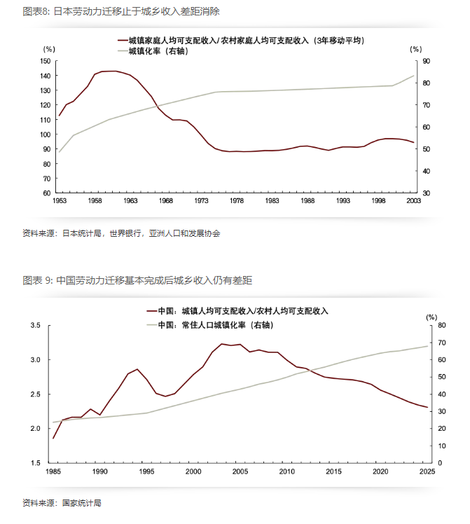
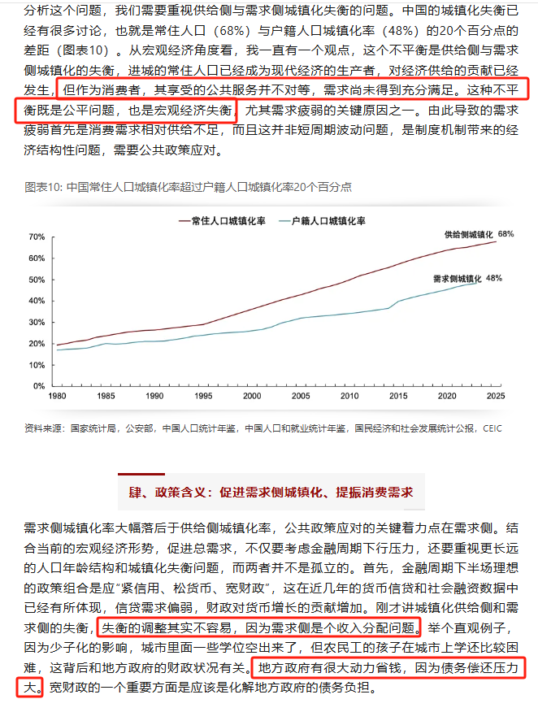
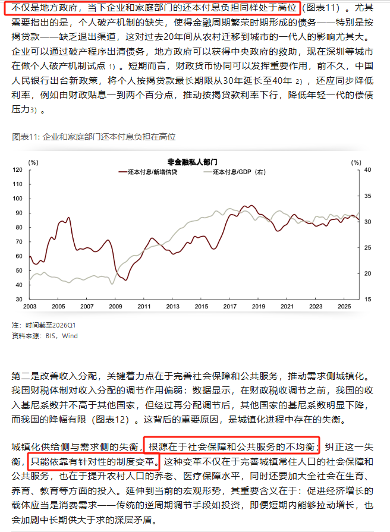
背景与关键数据
- 作者：彭文生，中金公司首席经济学家、研究部负责人，著有《渐行渐远的红利》（2013）和《渐行渐近的金融周期》（2017），本文是对 2013 年那本书里城镇化章节图表的更新。
- 生产者/消费者比例：25–64 岁人口除以其他年龄人口。超过 100 表示生产者多于消费者，即人口红利。比传统抚养比更直观：能看到拐点、反映城乡劳动力转移压力、作为储蓄率的基础指标。中国 1995 年前后跨过 100，2015 年前后见顶超过 140；日本 1970 年前后跨过 100，高点 120–130，1990 年代开始下降。
- 金融周期：国际清算银行（BIS）方法，房价和信贷相互促进形成的 15–20 年中长期周期。日本 1990 年代初顶部，2004–05 触底，花了十多年；中国 2017 年全国金融工作会议加强监管为顶部，2021 年房地产见顶，现在在下半场。
- 城镇化率：中国常住 68%、户籍 48%；日本 92%。
- 被动城镇化：不是劳动力主动迁移，而是农村老人多、城市年轻人多，老人离世后城镇化率在统计上自动上升，对经济拉动小。
- 日本 1999–2010 年城镇化率跃升：来自"平成大合并"（小泉政府财政改革推动的市町村合并），是行政区划变化不是真实迁移，类似中国撤县设区；背后是农村人口过于分散、公共设施利用率低、维护成本高。合并后总和生育率曾阶段性回升（1.26 → 1.45）。
- 城乡收入差距：日本劳动力迁移在城乡收入比降到约 1（1970 年代中期）后停滞；中国城镇/农村可支配收入比从 2007 年高点约 3.2 降到 2025 年约 2.3，仍是两倍以上，但农村年轻劳动力已经不多——"收入差距大但迁移空间有限"的矛盾。
- 还本付息负担：非金融私人部门还本付息占新增信贷约 85–90%，占 GDP 约 30%（2026 年一季度），处于高位。
- 政策建议：紧信用、松货币、宽财政；地方政府化债；个人破产制度（深圳试点）；央行新政把按揭最长期限从 30 年延长到 40 年；财政贴息把按揭利率降 1–2 个百分点；完善社保和公共服务（农民工子女上学、农村养老医疗）；加大生育、养育、教育投入。
- 收入分配：中国税前基尼系数不比其他国家高，但再分配后降幅有限，根源是城镇化失衡——进城人口享受不到公共服务。
图片解读
- 图 1（开篇 + 壹、中国是下一个日本吗）：作者自述从乡村走出来；中国经济面临较大下行压力，房地产与债务问题；生产者/消费者比例的三个优势：直观显示人口红利拐点（中国 1990 年代中期开始、2015 年前后见顶）、反映城乡劳动力转移压力、作为储蓄压力指标（1990 年代中期到 2015 年的高储蓄支撑了房地产和基建投资）。
- 图 2（图表 1：中国与日本生产者/消费者比例，1950–2030）：日本（灰线）1950 年约 70，1970 年跨过 100，1990 年前后高点约 125–130，2000 年后下滑，2020 年约 100，2030 年约 95。中国（红线）1950 年约 75，1970 年低点约 55，1995 年跨 100，2015 年高点约 142，之后缓降，2030 年约 130。日本拐点早约 20 年；中国峰值更高（每 100 个消费者有 140 个生产者在支持），所以人口红利消退对宏观平衡的影响可能比日本更显著。下方正文讲金融周期：日本 1990 年代初顶、2004–05 底，之后长期低迷；中国 2000 年代初外汇占款挤压信贷、2008 年后信贷扩张、2017 年顶、2021 年房地产见顶；问题是下半场要多长、会不会像日本那样长期低迷。
- 图 3（图表 2：中日金融周期对比，BIS，1988–2026Q1）：日本（灰）1990–92 年高点约 +0.11，1996–2000 年转负，2004 年前后低点约 -0.05，2010 年代回升，2018 年高点约 +0.07，现在约 0。中国（金）2001 年小高点 +0.05，2008 年低点约 -0.17，2016–17 年高点约 +0.18，2020 年转负，2025–26 年约 -0.12 仍在下行。中国这轮下半场的深度已经超过日本当年，而且还没见底。下方讲城镇化率差距（68% vs 92%）和城镇化拉动增长的两个渠道：集聚带来的规模经济和知识外溢，农村人口进城拓宽消费。
- 图 4（贰、人口老龄化带来被动城镇化 + 图表 4：中国人口红利叠加城镇化，1950–2020）：灰色面积是生产者/消费者（右轴），红线是城镇化率（左轴）。1995 年前后生产者/消费者跨过 100（虚线标注"生产者/净消费者超过 100% 与高速城镇化叠加"），之后城镇化率斜率明显变陡，从约 30% 升到 65%。这种叠加其他国家没有——日本和西方在人口红利之前城镇化已基本完成，中国是"未富先老"也是"未完成城镇化就已经老龄化"。叠加的后果：随着人口红利消退，老龄化驱动"被动城镇化"——城镇化率会继续上升，但不涉及年轻劳动力转移，拉动作用小。
- 图 5（图表 6：日本人口红利前城镇化率超过 70%，1950–2020）：日本 1970 年前后生产者/消费者跨 100 时（虚线），城镇化率已超 70%，之后缓慢升到约 80%（2000 年）、92%（2010 年后）。日本城乡迁移平缓，宏观不平衡更小。上方正文提醒：过去十年总和生育率在已经较低的基础上进一步显著下降，城里年轻人生育意愿低，可能部分抵消被动城镇化，"短期加剧需求下行压力、长期对供给也不利"。下方讲日本 1999–2010 年城镇化率跃升是撤乡并镇的行政因素，中国也面临类似的公共设施利用率压力。
- 图 6（图表 7：日本城市化率和总和生育率，1980–2024 + 叁、区分供给侧与需求侧城镇化）：城市化率（蓝）从约 76%（1980–2000）跃升到约 91%（2010），之后到 93%；总和生育率（红）从 1.8（1984）降到 1.26（2005），2005–2015 回升到 1.45，之后再降到 1.15（2024）。合并改善公共服务后生育率曾阶段性回升。下方：日本经验表明城乡收入差距收敛后人口迁移动力显著减弱；中国城镇居民可支配收入仍是农村的两倍以上，日本约 1——城乡收入差距仍大但人口年龄结构限制了迁移空间，这个看似矛盾的现象意味着什么？
- 图 7（图表 8：日本劳动力迁移止于城乡收入差距消除，1953–2003；图表 9：中国劳动力迁移基本完成后城乡收入仍有差距，1985–2025）：日本：城镇/农村家庭人均可支配收入比（红，3 年移动平均）1953 年约 110%，1960 年高点约 142%，1975 年降到约 90%（农村反超城市），之后维持 90–95%；城镇化率（灰，右轴）从 48% 升到约 82%。中国：城镇/农村可支配收入比（红）1985 年 1.85，1994 年高点 2.85，1997 年回落到 2.45，2007 年高点 3.25，之后持续下降到 2025 年约 2.3；常住人口城镇化率（灰）从 23% 升到 67%。对比的含义：日本的迁移是"差距消失了所以停"，中国是"差距还在但人没了"。
- 图 8（图表 10：中国常住人口城镇化率超过户籍人口城镇化率 20 个百分点，1980–2025 + 肆、政策含义）：两条线 1980 年都约 19%，1995 年后分叉，2025 年常住 68%（标注"供给侧城镇化"）vs 户籍 48%（标注"需求侧城镇化"）。正文（红框）："进城的常住人口已经成为现代经济的生产者，对经济供给的贡献已经发生，但作为消费者，其享受的公共服务并不对等，需求尚未得到充分满足。这种不平衡既是公平问题，也是宏观经济失衡"，是消费需求疲弱的关键原因之一，是制度机制问题而非短期波动。政策含义：紧信用、松货币、宽财政；失衡的调整不容易因为"需求侧是个收入分配问题"；城市学位空出来了但农民工子女上学仍难，背后是地方财政——"地方政府有很大动力省钱，因为债务偿还压力大"，宽财政的重要方面是化解地方债。
- 图 9（图表 11：企业和家庭部门还本付息负担在高位，2003–2026Q1）：非金融私人部门，还本付息/新增信贷（红，左轴）2003 年 60% → 2005 年高点 90% → 2009 年低点约 40%（四万亿信贷放量，分母变大）→ 2013 年约 85% → 2019 年高点约 95% → 2020 年降到 75% → 2025–26 年约 85–88%；还本付息/GDP（灰，右轴）2003 年约 20% → 2017 年约 33% → 2026 年约 30%。红框："不仅是地方政府，当下企业和家庭部门的还本付息负担同样处于高位"。个人破产机制缺失使按揭贷款缺乏退出渠道，对过去 20 年从农村迁到城市的一代人影响尤大；短期靠财政货币协同——按揭延长到 40 年、财政贴息降 1–2 个百分点。第二是改善收入分配：税前基尼不高但再分配效果有限，根源是社保和公共服务不均衡，"只能依靠有针对性的制度变革"；延伸到当前宏观："促进经济增长的载体应当是消费需求"，传统逆周期投资即使短期拉动增长也会加剧中长期供大于求。
为什么重要 / 对市场和经济的含义
- 把"中国是不是日本"推进了一层：从"房价会不会跌 30 年"的表层对比，推进到三个结构性差异——中国人口红利见顶更晚但更高、消退更猛；中国金融周期下半场深度已超日本；中国城镇化没完成但人口已老，"被动城镇化"意味着城镇化率数字上升不等于增长，不能再指望"城镇化红利"。
- 最有操作性的观点是供给侧 68% vs 需求侧 48%：近 3 亿农民工为城市生产，但孩子上不了学、老了没保障，自然存钱不消费——这是消费疲弱、储蓄率高、内需不足的制度根源，不是降息能解决的。所以药方是宽财政（化地方债 + 社保公共服务），这和帖 1 高盛、前一天 IMF 报告和中金"日本三轮牛市都靠财政"的结论一脉相承。
- 对市场：如果政策真的转向"需求侧城镇化"（农民工市民化、社保并轨），受益的是消费、服务、教育医疗；传统投资拉动（基建、地产）会被有意压制。宏观上意味着中国不会重复 2008 年式的大基建——这和近日"城市轨交审批重启"的信号有张力，要看哪条线最终占上风。
- Jason 只写了"这篇不错"，但放在一天的最后、配 9 张截图，分量很重。他近期反复讲"居民不加杠杆、内需塌方"，彭文生给出了制度层面的解释和数据。
延伸知识
- 刘易斯拐点 vs 人口红利拐点：刘易斯拐点是农村剩余劳动力耗尽、工资开始上涨（中国约 2004–2010 年）；人口红利拐点是生产者/消费者比例见顶（2015 年）。两者间隔约十年，这段时间是中国"工资涨、储蓄高、房价涨"的黄金期，之后三件事都反过来。
- BIS 金融周期：用房价和信贷/GDP 的中期波动（8–30 年带通滤波）合成。它比商业周期长，下半场通常伴随"资产负债表衰退"——企业和家庭只还债不借钱，货币政策失效，只有财政能填需求缺口。中国 2016–17 年顶、日本 1990 年顶、美国 2006 年顶，可以对照它们各自下半场的政策应对。
- 户籍制度与"半城镇化"：中国特有，进城但没户籍 → 没本地教育医疗社保 → 消费被压抑 → 高储蓄。2014 年"新型城镇化规划"提出户籍改革，但大城市落户仍难；2024–25 年政策重点转向"农业转移人口市民化"，这是观察彭文生药方能否落地的关键指标。
今日全图索引
| 帖号 | 时间（美西） | 主题 | 标签 | 图片文件名 |
|---|---|---|---|---|
| 帖 1 | 10-12 12:54 | 高盛 GOAL：债券从拖累变对冲，短期股+现金、中期股+债，回避信用债，金价目标 4650，前提是油价跌 26% | #金融# | post1_img1.png, post1_img2.png, post1_img3.png, post1_img4.png（另附 PDF） |
| 帖 2 | 10-12 12:59 | 野村：10 月前 9 天外资流入美股 39.3 亿超 9 月整月，新兴市场 ETF 转正 | #金融# | post2_img1.png |
| 帖 3 | 10-12 13:05 | 野村：中欧 TIC 联合声明是"缓期"，混动车限制借鉴 1981 年日美 VER，限量≠利润等比例下降 | #政策分析# | post3_img1.png, post3_img2.png |
| 帖 4 | 10-12 13:20 | 彭博四则：欧洲车企欢迎混动配额、碳酸锂期货 -10%、比亚迪欧洲招 4 万人、马克龙-柏林协议、出口退税 13%→9% | #政策分析# | post4_img1.png, post4_img2.png, post4_img3.png, post4_img4.png |
| 帖 5 | 10-12 13:22 | 彭博：哈萨克斯坦央行从黄金买家变卖家，金价自美伊战争以来跌约 1/5 | #金融# | post5_img1.png, post5_img2.png |
| 帖 6 | 10-12 13:27 | 彭博观点：普京为什么把"输掉乌克兰"说成"俄罗斯不复存在"——动员需要与历史焦虑 | #其他国家经济# | post6_img1.png, post6_img2.png, post6_img3.png, post6_img4.png |
| 帖 7 | 10-12 20:34 | CREA：开战以来俄化石能源买家排行，中国 3,558 亿欧元第一、欧盟第二、印度第三 | #金融# | post7_img1.png |
| 帖 8 | 10-12 20:41 | 国信达：9 月商铺出售挂牌价同比 -16.88%，出租 -7.26%，价指数七年跌 55% | #经济数据# | post8_img1.png |
| 帖 9 | 10-12 20:46 | JPM：新能源车出口退税 13%→9%，比亚迪/零跑 2027 年利润 -18%，欧盟配额冲击更大 | #政策分析# | post9_img1.png（另附 PDF） |
| 帖 10 | 10-12 21:36 | 彭文生：中国是下一个日本吗——人口红利叠加城镇化、被动城镇化、供需两侧城镇化失衡 | #经济数据# | post10_img1.png … post10_img9.png |